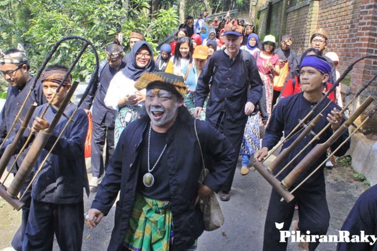

Kampung Adat Cirendeu

Kampung adat Cirendeu adalah sebuah perkampungan yang berada di Leuwigajah, Kecamatan Cimahi Selatan, Kota Cimahi.
Pada tahun 2019, Pemerintah Kota Cimahi mencatat terdapat 50 kepala keluarga yang bermukim di kampung adat Cirendeu.
Luas dari pemukiman Cirendeu adalah 64 hektar (ha) dengan pembagian 60 ha digunakan sebagai lahan pertanian,
sementara 4 ha digunakan sebagai lahan pemukiman warga. Letak kampung adat Cirendeu sekitar 15 km dari Kota Bandung.
Keunikan kampung adat Cirendeu salah satunya terletak pada ajaran kepercayaan yang diwariskan secara turun-temurun
dari nenek moyang. Desa ini juga memiliki budaya dan adat istiadat yang dipegang teguh dari satu generasi ke generasi
selanjutnya. Nuansa hidup yang santun, saling mencintai terhadap lingkungan, serta menjaga dan melestarikan adat
istiadat budaya sunda menjadi salah satu nilai filosofis hidup masyarakat kampung adat Cirendeu.
Masyarakat kampung adat Cirendeu mengolah singkong menjadi makanan pokok berupa beras yang dikonsumsi sehari-hari.
Makanan ini dikenal dengan nama "Rasi" atau beras singkong.
Kehidupan Masyarakat Cirendeu
Secara umum masyarakat adat kampung Cirendeu memegang teguh adat istiadat dan budaya leluhur.
Mirip dengan kampung adat lainnya, masyarakat di Cirendeu hidup gotong royong dan saling membantu termasuk
dalam mata pencahariaan sehari-hari. Masyarakat kampung adat Cirendeu memiliki prinsip dalam bahasa sunda,
"Teu boga sawah asal boga pare, teu boga pare asal boga beas, teu boga beas asal nyangu,
teu nyangu asal dahar, teu dahar asal kuat," yang berarti tidak punya sawah asalkan punya padi,
tidak punya padi asalkan punya beras, tidak punya beras asalkan masak nasi, tidak punya nasi asalkan makan,
tidak makan asalkan kuat.

Masyarakat kampung adat Cirendeu menganut aliran kepercayaan sunda wiwitan. Sunda wiwitan merupakan aliran
kepercayaan dengan pemujaan terhadap arwah leluhur (animisme dan dinamisme). Beberapa masyarakat desa di
provinsi Jawa Barat dan Banten juga menganut aliran kepercayaan sunda wiwitan, seperti di Kampung Naga,
Cirebon, Kanekes, Lebak, Ciptagelar Kasepuhan Banten Kidul, Cigugur, Kuningan, Cisolok, Sukabumi, dan Cimahi.
Masyarakat kampung adat Cirendeu sedikit berbeda dengan masyarakat sekitarnya. Mereka tidak menggunakan
beras sebagai makanan pokok, melainkan singkong. Masyarakat Cirendeu mengolah singkong menjadi berbagai
kebutuhan makanan yang variatif.
Masyarakat Cirendeu memiliki kebiasaan sehari-hari dengan bercocok tanam secara tradisional.
Pupuk alami dimanfaatkan sebagai teknik dalam bertanam hingga saat ini. Peternakan juga menjadi ladang
kegiatan lain bagi masyarakat Cirendeu. Populasi hewan ternak di Cirendeu didominasi oleh domba dan ayam.